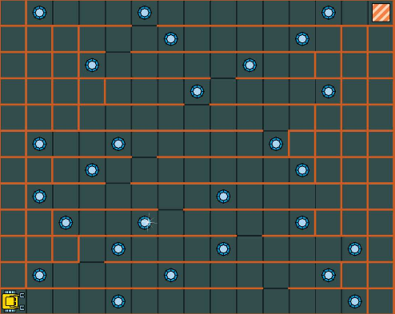
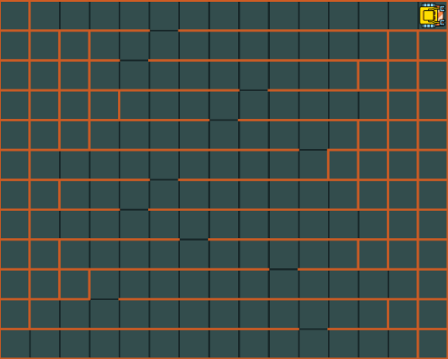

10. 自定义命令¶
10.1 目标¶
- 学会将复杂的任务分解为小任务
- 学会使用自定义命令使程序更简单
当写一个程序时,最好先检查一下是否包含更容易被解决的子任务.如果有,先解决它们,之后为它们创建自定义命令(自程序).于是,原任务立刻显得不那么困难了! 我们将结合例子展示如何定义新命令.
10.2 定义新命令¶
新命令被保留关键字 def 定义. 例如,某程序中机器人在很多情况下都需要转身,于是定义一个 turnback 命令将十分方便:
def turnback
repeat 2
left
注意新定义的命令体需要缩进,类似于循环体和条件判断. 在某些程序中,Karel需要捡起它下面的所有宝石.因此我们定义一个新的命令 getall :
def getall
while gem
get
我们可以像使用其他命令一样使用新定义的命令.
10.3 街机游戏¶
这次Karel需要经历本关的所有层,如 图1.Karel正在玩的街机游戏 所示. 拾起所有宝石, 并且回到右上方的家方块. 在每层之间只有一个洞. 起初机器人站在第一层的某个地方.

{kind=link}
图1.Karel正在玩的街机游戏
很明显,这个问题比我们之前遇到的任何问题都复杂. 所以让我们将任务分解为每一层需要做什么的小任务. 可以确定,它需要不断转身,所以让我们首先定义 turnback 命令:
# New command to turn back:
def turnback
repeat 2
left
由于机器人不知道宝石的确切位置,它总是需要不断地扫描整个楼层. 我们假设它站在每层的最西边面向东:
# Sweep one floor from left to right.
# Assumes that robot stands at the
# West end, facing East:
def sweep
while not wall
while gem
get
go
# Do not forget gems in the last square:
while gem
get
接下来我们需要一个命令将机器人移到每层的最左端并使它朝东, 满足命令 sweep 的需要.
定义这个命令为 gowest
# Reach West end of the current floor
# and turn around to face East:
def gowest
# Turn West:
while not north
left
left
# Go to West end:
while not wall
go
# Turn around:
turnback
快成功了! 我们最后的需要是向上爬一层楼. 定义为 moveup :
# Find the opening and move one
# floor up. Assumes that robot is
# at the East end of a floor,
# facing East:
def moveup
if not home
# Face North:
left
# Find opening:
while wall
left
go
right
# Pass through opening:
go
最后一步, 我们把之前定义的命令 gowest, sweep, moveup 整合到一起定义新的命令 arcade :
# Main procedure:
def arcade
while not home
gowest
sweep
moveup
主程序只有一条命令 arcade:
# Main program:
arcade

{kind=link}
图2.程序运行结束后的效果